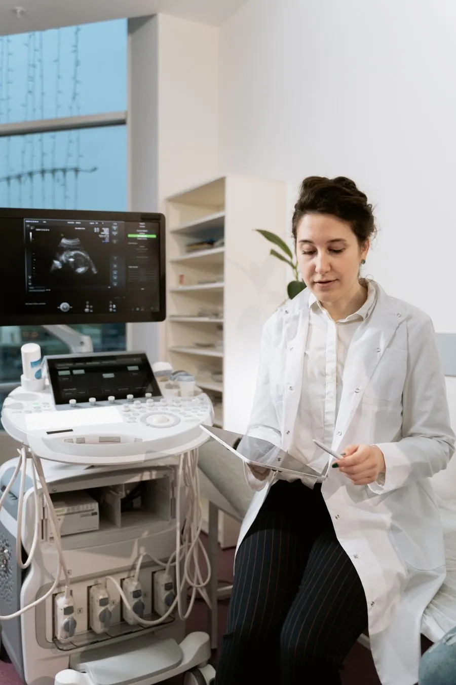
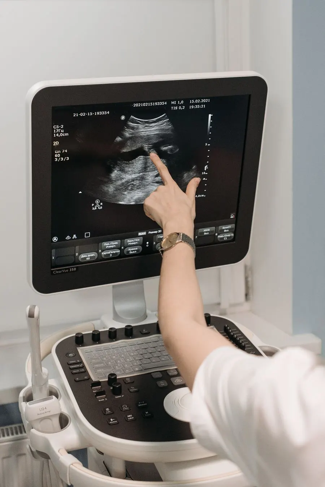
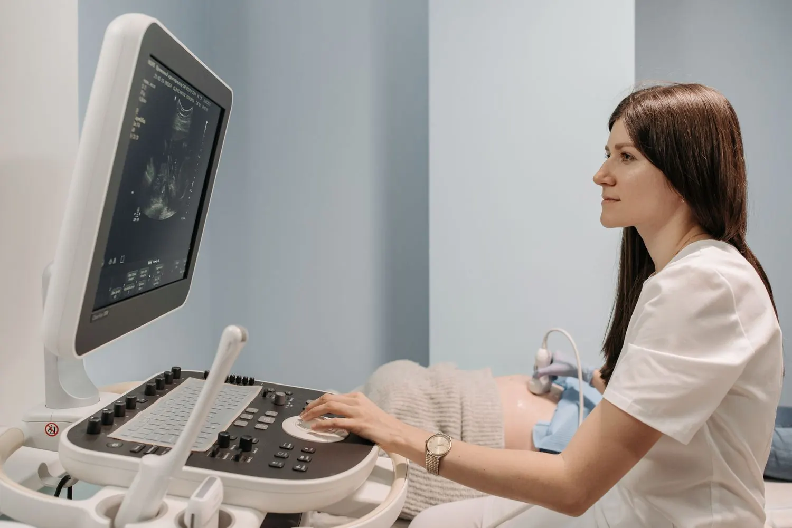

Ecografie a Bologna, spiegate con chiarezza
Ecografie ed ecocolordoppler in studio e a domicilio. Prenoti online a qualsiasi ora e il dottore ti illustra l'esito.
PrenotaPrenoti online
Scegli giorno e ora sull'agenda o dall'App, a qualsiasi ora. Ricevi conferma e promemoria via email.
Ti prepari
Per alcune ecografie servono digiuno o vescica piena. Le indicazioni sono nella sezione preparazione.
Fai l'esame
Il dottore esegue l'ecografia e ti illustra l'esito. Si paga in studio, in contanti o con POS.
Ecografie a Bologna da più di vent'anni
Lo studio privato del Dott. Alberto Tarozzi esegue ecografie ed ecocolordoppler in studio e a domicilio, con strumentazione all'avanguardia.
Ambiente sereno, totale privacy e un medico che illustra l'esito dell'esame. Prenotazione online 24 ore su 24, anche dall'App.
Vedi le tariffe
Cosa facciamo
Diagnostica per immagini e dietologia, con prenotazione online 24 ore su 24.
Ecografie
Addome, tiroide e capo collo, mammella, muscoli e articolazioni, scroto, parti molli e cute, in studio.
Ecocolordoppler
Indagine vascolare: carotidi e vertebrali, vasi addominali, arterie renali, scroto, vene degli arti inferiori.
A domicilio
Nella tua abitazione, a Bologna e nei comuni limitrofi. Documentazione e risposta subito, via email o WhatsApp.
Dietologia
Dieta personalizzata elaborata dal medico, in studio oppure a distanza, online.
Check-up e pacchetti
Due o tre esami a scelta, oppure pacchetti prepagati da 3 o 5 crediti, validi 3 anni.
Prenotazione e App
Agenda online 24 ore su 24 dal sito o dall'App LaMiaEco, gratuita e senza pubblicità.
Tariffe
Quasi tutte le ecografie costano 70 €. Pagamenti in contanti e con POS in studio.
70 €
La maggior parte delle ecografie
Altre ecografie
- Addome completo80 €
- Mammaria75 €
- Muscolo tendinea, due tratti90 €
- Osteoarticolare, due tratti90 €
A domicilio
- Ecografia a domicilio150 €
Bologna e comuni limitrofi. 30 € per ogni esame aggiuntivo, 6 € in più in ZTL. Si prenota per telefono o email.
Ecocolordoppler
- TSA, carotidi e vertebrali85 €
- Vasi addominali90 €
- Arterie renali85 €
- Scrotale80 €
- Venoso arti inferiori110 €
- Venoso, singolo arto80 €
Check-up e pacchetti
- Check-up base, 2 esami a scelta110 €
- Check-up avanzata, 3 esami a scelta155 €
- Pacchetto 3 esami155 €
- Pacchetto 5 esami210 €
I pacchetti sono crediti validi 3 anni: ogni credito vale un esame del tariffario, esclusi check-up e domicilio. Costo per esame: 51,70 € con 3 crediti, 42 € con 5.
Dietologia
- Visita dietologica100 €
- Visita con ecografia addome superiore e tiroide170 €
- Controllo dieta30 €
Le prenotazioni online si possono modificare o annullare nei due giorni prima dell'esame; il giorno stesso chiama lo studio.

Ti spieghiamo l'esito dell'esame
Chi ci sceglie lo dice spesso: gentilezza, disponibilità, spiegazioni chiare.
Il dottore illustra i risultati
Alla fine dell'esame ti mostra cosa si vede e ti dà indicazioni.
Ambiente sereno e privacy
Uno studio medico privato, con la massima riservatezza.
Promemoria prima della visita
Conferma della prenotazione e promemoria via email, anche dall'App.
Cosa dicono i pazienti
Recensioni lasciate su Google.
Come prepararsi all'esame
Indicazioni per soggetti adulti, secondo la pagina di preparazione dello studio.
Addome completo
Fegato, colecisti e vie biliari, pancreas, milza, reni, aorta, vescica e organi pelvici.
Nei due giorni precedenti: carbone vegetale
In caso di meteorismo (gonfiori addominali), due compresse dopo colazione, dopo pranzo e dopo cena. Da evitare: verdura, latte, latticini, frutta, legumi e bevande gassate.
Digiuno da almeno 6 ore
Se compatibile con le terapie in atto. Se l'appuntamento è nel pomeriggio, fai un pasto leggero 6 ore prima.
Vescica piena
Urina due ore prima dell'esame, bevi un litro d'acqua un'ora e mezzo prima dell'appuntamento (in mezz'ora) e non urinare fino all'esame.
Controindicazioni
Per pazienti con patologie cardiache o restrizioni nell'assunzione di liquidi, fai riferimento al tuo medico per la preparazione.
Documentazione e terapie
Porta cartelle cliniche, esami di laboratorio e soprattutto precedenti ecografie. Assumi le eventuali terapie in corso secondo lo schema abituale.
Addome superiore e anse intestinali
Reni, fegato, colecisti, pancreas, milza e aorta addominale.
Nei due giorni precedenti: carbone vegetale
In caso di meteorismo (gonfiori addominali), due compresse dopo colazione, dopo pranzo e dopo cena. Da evitare: verdura, latte, latticini, frutta, legumi e bevande gassate.
Pasto leggero 6 ore prima
Se l'appuntamento è nel pomeriggio, 6 ore prima fai un pasto leggero.
Documentazione e terapie
Porta cartelle cliniche, esami di laboratorio e soprattutto precedenti ecografie. Assumi le eventuali terapie in corso secondo lo schema abituale.
Addome inferiore, vie urinarie, prostata, pelvica
Vescica, prostata, utero e ovaie, reni e vie urinarie.
Nei due giorni precedenti: carbone vegetale
In caso di meteorismo (gonfiori addominali), due compresse dopo colazione, dopo pranzo e dopo cena. Da evitare: verdura, latte, latticini, frutta, legumi e bevande gassate.
Vescica piena
Urina due ore prima dell'esame, bevi un litro d'acqua un'ora e mezzo prima dell'appuntamento (in mezz'ora) e non urinare fino all'esame.
Controindicazioni
Per pazienti con patologie cardiache o restrizioni nell'assunzione di liquidi, fai riferimento al tuo medico per la preparazione.
Documentazione e terapie
Porta cartelle cliniche, esami di laboratorio e soprattutto precedenti ecografie. Assumi le eventuali terapie in corso secondo lo schema abituale.
Tiroide, seno, muscoli, articolazioni, Doppler
Per questi esami la pagina di preparazione del sito non indica norme specifiche.
Hai un dubbio? Chiedi allo studio
Telefona al 051 38 47 47 o scrivi dal modulo contatti: ti diranno se serve qualche accorgimento.
Porta i referti precedenti
Cartelle cliniche, esami e precedenti ecografie permettono il confronto nel tempo.
Il Dott. Alberto Tarozzi
Medico chirurgo laureato a Bologna nel 1994, dal 1995 si dedica all'ecografia internistica. Lo studio privato esegue ecografie a Bologna da più di vent'anni.
Ambiente sereno, totale privacy e un medico che illustra l'esito dell'esame.
Laurea in Medicina e Chirurgia
Università di Bologna, 28 ottobre 1994.
Ordine dei Medici di Bologna n° 13066
Iscritto al Registro Nazionale dei Medici Ecografisti SIUMB.
Formazione SIUMB continua
Corsi di ecodoppler avanzato addominale e periferico, aggiornamenti ecografici, procedure ecoguidate.
Dietologia
Diete personalizzate in studio e online. Corso di dietoterapia dell'obesità, 2000.
App LaMiaEco
Prenoti scegliendo giorno e ora, ricevi conferma e promemoria via email, vedi lo storico e i crediti dei pacchetti prepagati. Gratuita e senza pubblicità.
Scopri l'appApprofondimenti
Articoli dal sito dello studio sulle ecografie più richieste.



Prenota la tua ecografia
Online a qualsiasi ora, oppure chiama lo studio.
- Via Battindarno 840133 Bologna (BO)
Apri in Google Maps - Studio051 38 47 47
- Cellulare e WhatsApp340 2166135, scrivi su WhatsApp
| Lunedì - venerdì | 8:00 - 18:30 |
|---|---|
| Sabato | 8:00 - 11:30 |
| Domenica | Chiuso |